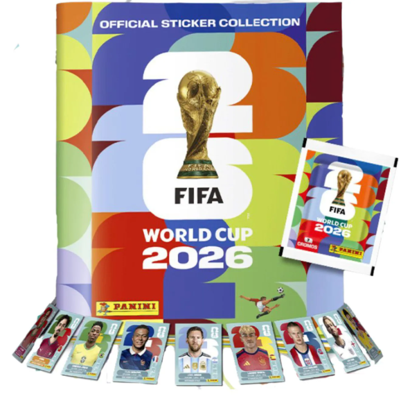

COPA DO MUNDO DA FIFA 2026 ⚽
Os albuns da Copa do Mundo começaram no Brasil em 1950, lançados pela fábrica 'A Americana'.A tradição evoluiu globalmente a partir de 1970, quando a editora Panini lançou o primeiro album licenciado em parceria com a FIFA

COMO COMPLETAR SEU ALBUM
Para você completar seu álbum, exige organização. O processo ideal é:
Organize e planeje: Faça uma lista de todas as figurinhas que faltam. Para ficar mais fácil utilize aplicativos de celular que te auxiliam melhor.
Pontos de Troca: Frequentar praças, bancas e pontos de encontro com outros colecionadores é a melhor forma de conseguir as figurinhas que faltam.
Grupos na internet: Procure por grupos no Whatsapp focados apenas na troca de figurinhas na sua região.
Uma Tradição das Copas
Você pode ganhar figurinhas dos seus amigos de uma outra maneira que é batendo 'bafo'. Existe técnicas diferentes para que você consiga virar mais e mais figurinhas.
Essa brincadeira começa assim:
Você e seu amigo apostam cada um o mesmo número de figurinhas e quem ir virando pega as figurinhas.
O segredo principal é criar uma concha perfeita com as mãos para canalizar o vento, gerando uma diferença de pressão que levanta as figurinhas.